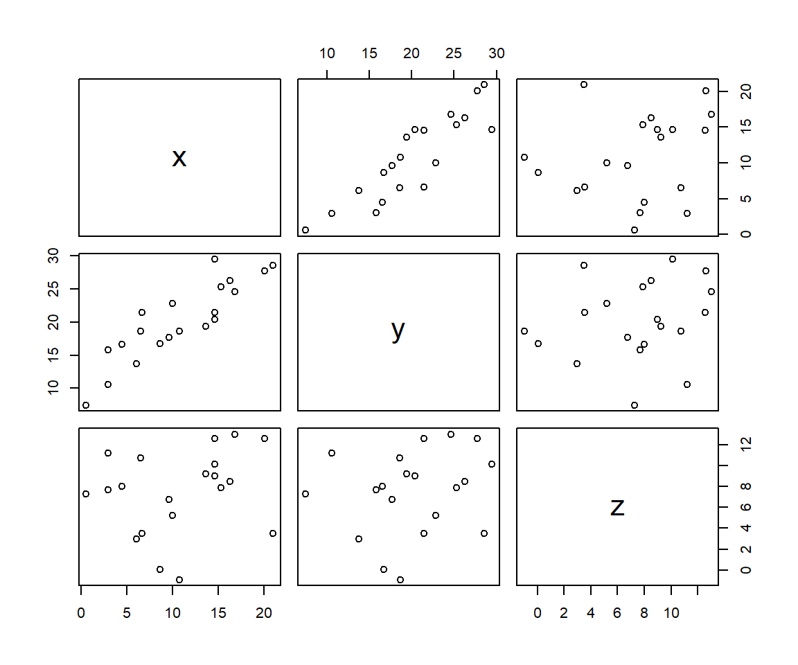
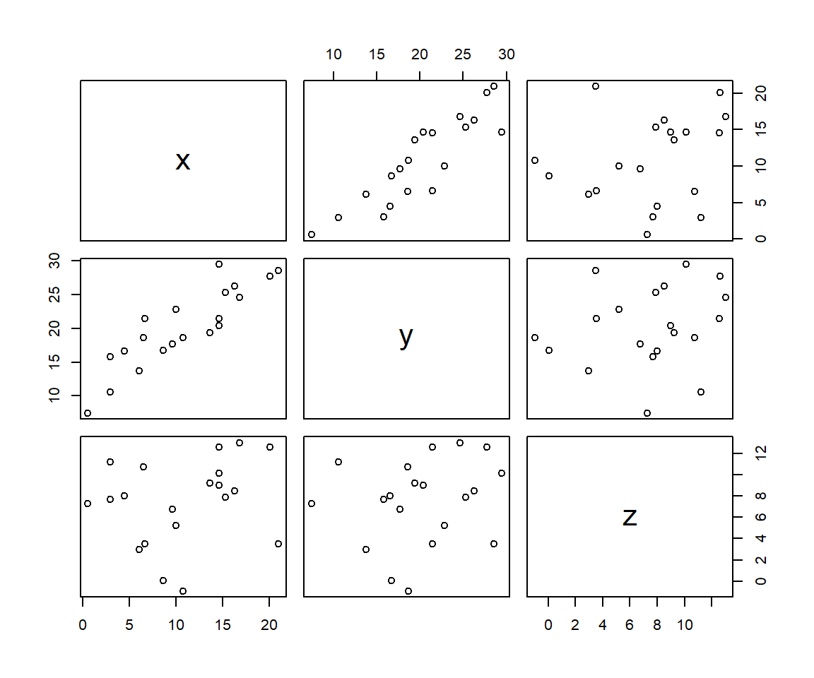
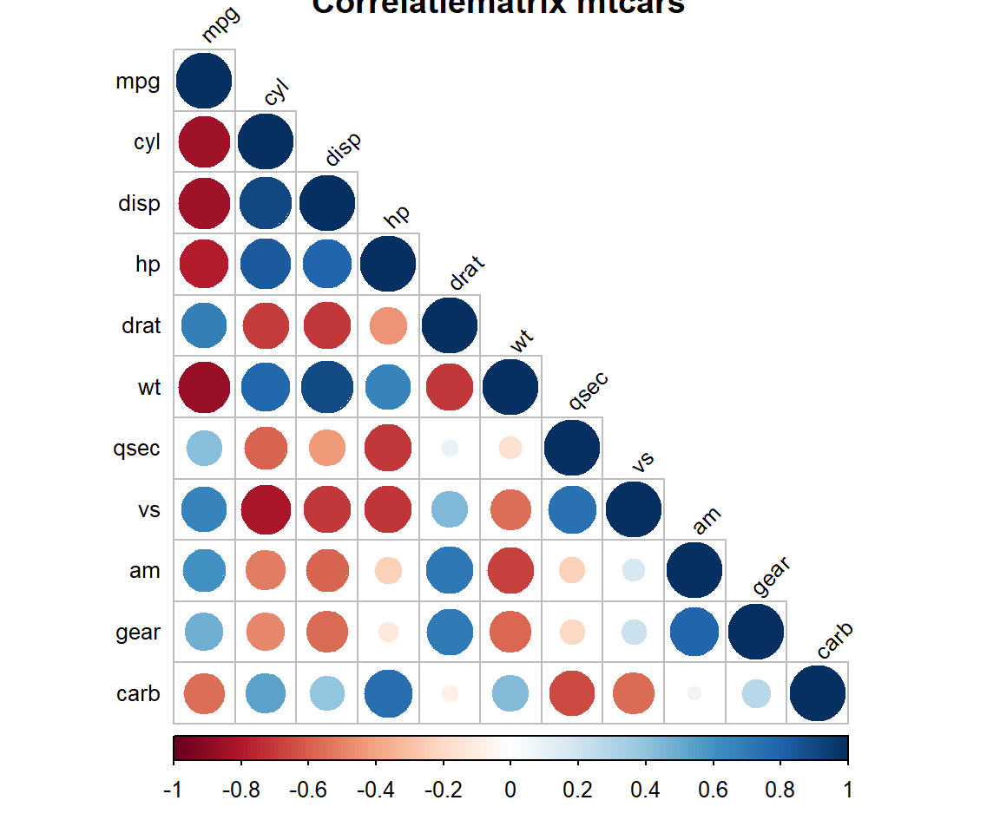
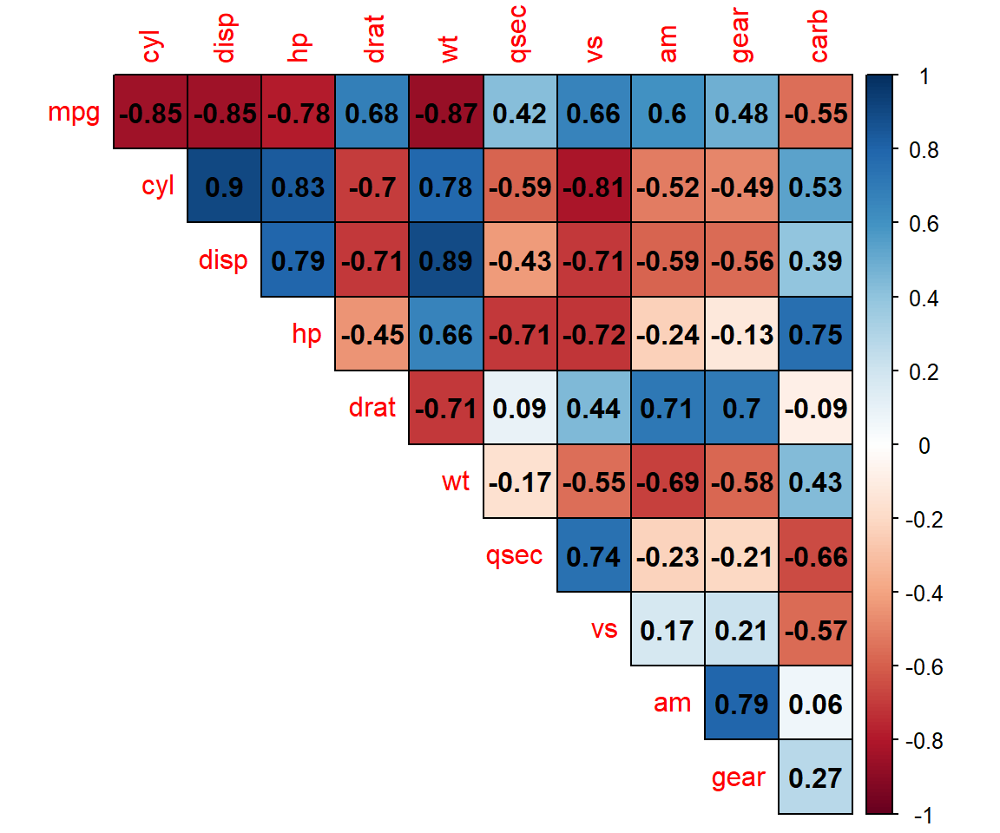
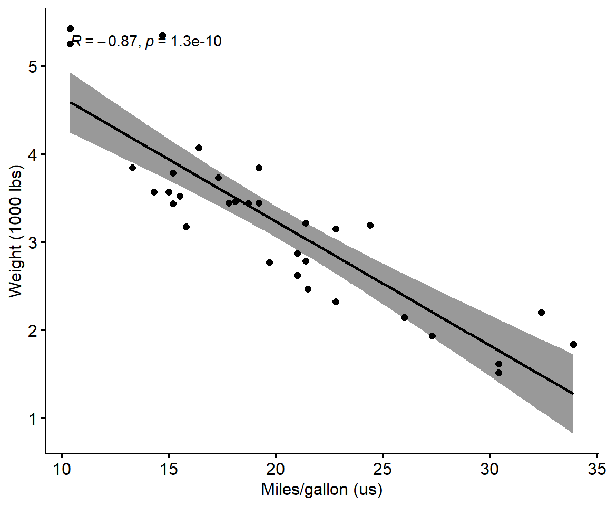
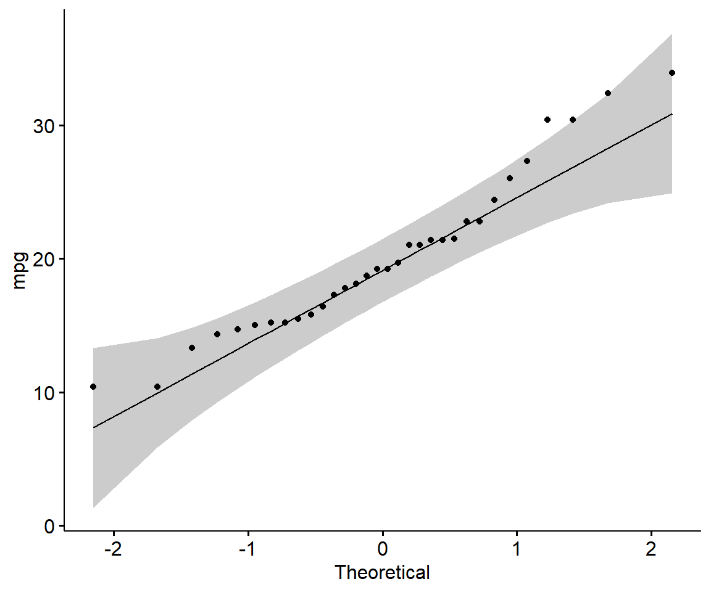

set.seed(12345)
mydf <- data.frame(x = sample(1:20, size = 20) + rnorm(n=10, mean=1, sd=2)) %>%
mutate(y = x + rnorm(n=10, mean=10, sd=3)) %>%
mutate(z = (sample(1:20, size = 20)/2) + rnorm(n=20, mean=1, sd=5))
plot(mydf)
Bij regressiemodellen wordt uitgegaan van een causaal (oorzakelijk) verband tussen variabelen. Het is echter ook mogelijk dat er een samenhang is tussen twee variabelen zonder dat vastgesteld kan worden waardoor dat komt. Het zou kunnen dat deze twee variabelen door een andere variabele beinvloed worden.
Er is sprake van multicollineariteit wanneer meerdere onafhankelijke variabelen onderling sterk gecorreleerd zijn. Dit maakt het inschatten van de relatie tussen elke onafhankelijke variabele en de afhankelijke variabele moeilijk omdat de onafhankelijke variabelen elkaar onderling beinvloeden. Een sterke multicollineariteit zorgt voor een toename in de variantie van de uitkomsten en maakt de uitkomsten gevoelig voor kleine wijzigingen in het model. De statische gevolgtrekking uit de data wordt minder betrouwbaar en uitkomsten van machine learning modellen minder stabiel.
Voorbeeld 4.1 Eenvoudig voorbeeld
set.seed(12345)
mydf <- data.frame(x = sample(1:20, size = 20) + rnorm(n=10, mean=1, sd=2)) %>%
mutate(y = x + rnorm(n=10, mean=10, sd=3)) %>%
mutate(z = (sample(1:20, size = 20)/2) + rnorm(n=20, mean=1, sd=5))
plot(mydf)
In de grafiek is tussen x en y een positieve correlatie waar te nemen.
Een maatstaf voor de lineaire samenhang tussen twee kansvariabelen is de covariantie.
Voor een populatie:
\[cov(x,y) = \sigma_{xy} = \frac{1}{N}\sum_{i=1}^{N}(x_i-\mu_x)(y_i-\mu_y)\]
Voor een steekproef:
\[cov(x,y) = s_{xy} = \frac{1}{n-1}\sum_{i=1}^{n}(x_i-\bar{x})(y_i-\bar{y})\]
Het interpreteren van de covariantie kan lastig zijn omdat deze niet gestandaardiseerd is. Standaardiseren wil zeggen dat je corrigeert voor de meetschaal van de variabele. Als bijvoorbeeld de massa van een voorwerp uitdrukt in kilogrammen, dan is de meetschaal duizend keer kleiner dan wanneer je de massa uitdrukt in grammen. De covariantie is afhankelijk van de meetschaal van de variabelen, en is dus groter als massa in grammen is uitgedrukt dan als massa in kilogrammen is uitgedrukt. Daarom wordt meestal met de correlatiecoëfficient gewerkt.
Door de covariantie te delen door de standaarddeviaties corrigeer je wel voor de meetschalen. Daarom ligt de correlatiecoefficient altijd tussen -1 en +1. Het teken geeft de richting (positief of negatief) aan. Als er geen relatie bestaat tussen de twee variabelen is de correlatiecoëfficiënt 0.
De correlatie tussen twee variabelen kun je in R berekenen met de functie cor().
syntax: cor(x, y = NULL, method = c("pearson", "kendall", "spearman"))
x, een numerieke vector, matrix of data framey, NULL (default, en is gelijk aan y=x) of een vector, matris of data frame, met vergelijkbare afmetingen als x.method, geeft aan welke correlatiecoëfficient berekend moet worden. Pearson is de meest gebruikte.Gebruik de Pearson correlatiecoëfficiënt om de mate van lineaire samenhang te beoordelen tussen twee kwantitatieve (interval of ratio) variabelen. De aanwezigheid van uitbijters beinvloedt de maat.
Voor een populatie:
\[\rho_{xy} = \frac{cov(x,y)}{\sigma_x \sigma_y} = \frac{\sigma_{xy}}{\sigma_x \sigma_y}\]
Voor een steekproef:
\[r(x,y) = \frac{s_{xy}}{s_x s_y}\]
cor(mydf, method = "pearson") x y z
x 1.000 0.881 0.220
y 0.881 1.000 0.192
z 0.220 0.192 1.000Ook hieruit blijkt dat er een sterke positieve correlatie is tussen x en y.
Hou bij het interpreteren van de Pearson correlatiecoefficiënt wel het volgende in gedachten:
Wanneer de gegevensverzameling meerdere variabelen bevat, dan kun je correlatiecoefficiënt voor alle mogelijke combinaties van twee variabelen berekenen en deze afbeelden in een correlatiematrix.
Als voorbeeld de berekening van de correlatiematrix voor mtcars.
#Berekening correlatie(matrix)
cormat <- round(cor(mtcars, method = "pearson"), 2) # op 2 decimalen
cormat mpg cyl disp hp drat wt qsec vs am gear carb
mpg 1.00 -0.85 -0.85 -0.78 0.68 -0.87 0.42 0.66 0.60 0.48 -0.55
cyl -0.85 1.00 0.90 0.83 -0.70 0.78 -0.59 -0.81 -0.52 -0.49 0.53
disp -0.85 0.90 1.00 0.79 -0.71 0.89 -0.43 -0.71 -0.59 -0.56 0.39
hp -0.78 0.83 0.79 1.00 -0.45 0.66 -0.71 -0.72 -0.24 -0.13 0.75
drat 0.68 -0.70 -0.71 -0.45 1.00 -0.71 0.09 0.44 0.71 0.70 -0.09
wt -0.87 0.78 0.89 0.66 -0.71 1.00 -0.17 -0.55 -0.69 -0.58 0.43
qsec 0.42 -0.59 -0.43 -0.71 0.09 -0.17 1.00 0.74 -0.23 -0.21 -0.66
vs 0.66 -0.81 -0.71 -0.72 0.44 -0.55 0.74 1.00 0.17 0.21 -0.57
am 0.60 -0.52 -0.59 -0.24 0.71 -0.69 -0.23 0.17 1.00 0.79 0.06
gear 0.48 -0.49 -0.56 -0.13 0.70 -0.58 -0.21 0.21 0.79 1.00 0.27
carb -0.55 0.53 0.39 0.75 -0.09 0.43 -0.66 -0.57 0.06 0.27 1.00Merk ook op dat de correlatiecoëfficiënten langs de diagonaal van de tabel allemaal gelijk zijn aan 1 omdat elke variabele uiteraard een perfecte correlatie met zichzelf heeft. Verder is de correlatiematrix symmetrisch. De waarden boven de diagonaal zijn gelijk aan de waarden onder de diagonaal. Vaak wordt deze bovenste helft dan ook weggelaten.
Met package corrplot kun je de correlatiematrix visualiseren waardoor het beoordelen van de matrix gemakkelijker en sneller gaat.
corrplot::corrplot(cormat,
title = "Correlatiematrix mtcars",
type = "lower",
tl.cex = 0.8, tl.col = "black", tl.srt = 45)
Positieve waarden worden in blauw weergegeven en negatieve waarden in rood. De intensiteit van de kleur is evenredig met de correlatiecoëfficiënt, dus hoe sterker de correlatie (d.w.z. hoe dichter bij -1 of 1), hoe donkerder de vakken.
Er zijn veel argumenten beschikbaar om de opmaak te wijzigen. Een voorbeeld
corrplot::corrplot(cormat, method = "color", type = "upper", outline = TRUE,
diag = FALSE, addCoef.col = "black", number.digits = 2)
method bepaalt de vorm van het correlatieobject. Mogelijke waarden: “circle” (default), “square”, “ellipse”, “number”, “pie”, “shade” en “color”.type bepaalt wat weergegeven wordt. Mogelijke waarden: “full”, “upper” of “lower”.outline voor het weergeven van de zwarte omtrek bij cirkels, vierkanten, …diag voor het weergeven van de correlatiecoefficienten op de hoofddiagonaal. Waarden: FALSE (default), TRUEaddCoef.col om de correlatiecoefficienten weer te geven in een bepaalde kleur.number.digits het aantal decimalensig.level het significantieniveau (default 0.05)Gebruik de Spearman correlatiecoëfficient om de mate van samenhang te beoordelen tussen rangorde variabelen. Deze test kan worden gebruikt als de gegevens niet afkomstig zijn van een bivariate normale verdeling.
Als voorbeeld de berekening van de correlatie tussen het aantal cylinders en het aantal versnellingen in de data mtcars.
cormat <- cor(mtcars[, c("cyl", "gear")], method = "spearman")
round(cormat, 2) cyl gear
cyl 1.00 -0.56
gear -0.56 1.00De Kendall correlatiecoëfficiënt kan ook gebruikt worden om de mate van samenhang te beoordelen tussen rangorde variabelen. Deze test kan worden gebruikt als de gegevens niet noodzakelijkerwijs afkomstig zijn van een bivariate normale verdeling. Het is echter een niet-parametrische maat.
Correlatie is geen causaliteit. Het kan zijn dat er correlatie tussen twee variabelen is, maar dat een andere variabele de samenhang verklaart. Een bekend voorbeeld: er is een relatie tussen schoenmaat van kinderen en hoe goed ze kunnen lezen. Maar dat betekent niet dat je schoenmaat je leesniveau beïnvloedt (of, gekker nog, dat je grotere voeten krijgt als je goed kunt lezen). Nee, er is een derde ‘verstorende variabele’: leeftijd. Oudere kinderen hebben én grotere voeten én kunnen beter lezen.
Voor causaliteit moet je onderzoeksmodel voldoen aan een aantal voorwaarden; (1) correlationeel verband, (2) tijdsvolgorde , eerst oorzaak dan gevolg, en (3) afwezigheid vs aanwezigheid oorzaak.
Mooie voorbeelden van valse correlaties vind je op Spurious correlations
Met de functie cor.test kun je een correlatietoetsing uitvoeren.
cor.test(x, y, alternative, method, conf.level, ...)
alternativegeeft de alternatieve hypothese aan. Waarden: “two.sided”, “greater”, “less”.method bepaalt de te gebruiken methode. Waarden: “pearson”, “kendall”, “spearman”conf.level bepaalt het betrouwbaarheidsinterval (alleen voor Pearson)De hypotheses zijn:
Beslissingsregel: Als de p-waarde < alpha (0.05) dan wordt de nulhypothese verworpen.
Als voorbeeld wordt de ingebouwde dataset mtcars gebruikt. De samenhang tussen de variabelen mpg en wt wordt nu onderzocht.
Pearson
cor.test(mtcars$mpg, mtcars$wt, method = "pearson")
Pearson's product-moment correlation
data: mtcars$mpg and mtcars$wt
t = -10, df = 30, p-value = 1e-10
alternative hypothesis: true correlation is not equal to 0
95 percent confidence interval:
-0.934 -0.744
sample estimates:
cor
-0.868 De p-waarde is kleiner dan \(\alpha = 0,05\). Je kunt dus concluderen dat wt en mpg significant correleren met een correlatiecoëfficient van -0.87 en een p waarde van 1.29410^{-10}
Kendall
cor.test(mtcars$mpg, mtcars$wt, method = "kendall")
Kendall's rank correlation tau
data: mtcars$mpg and mtcars$wt
z = -6, p-value = 7e-09
alternative hypothesis: true tau is not equal to 0
sample estimates:
tau
-0.728 Spearman
cor.test(mtcars$mpg, mtcars$wt, method = "spearman")
Spearman's rank correlation rho
data: mtcars$mpg and mtcars$wt
S = 10292, p-value = 1e-11
alternative hypothesis: true rho is not equal to 0
sample estimates:
rho
-0.886 Voor de visualisatie kun je ggscatter() uit package ggpubr gebruiken.
ggpubr::ggscatter(mtcars, x = "mpg", y = "wt",
add = "reg.line", conf.int = TRUE,
cor.coef = TRUE, cor.method = "pearson",
xlab = "Miles/gallon (us)", ylab = "Weight (1000 lbs)")
1 - Is de covariantie lineair?
Ja, gezien de grafiek. In de situatie waarin de spreidingsdiagrammen gebogen patronen vertonen, heb je te te maken met niet-lineaire associatie tussen de twee variabelen.
2 - Volgen de gegevens van elk van de twee variabelen een normale verdeling?
Gebruik Shapiro-Wilk normaliteitstest.
shapiro.test(mtcars$mpg) # Shapiro-Wilk normality test voor mpg
Shapiro-Wilk normality test
data: mtcars$mpg
W = 0.9, p-value = 0.1shapiro.test(mtcars$wt) # Shapiro-Wilk normality test voor wt
Shapiro-Wilk normality test
data: mtcars$wt
W = 0.9, p-value = 0.09De twee p-waarden zijn groter dan het significantieniveau 0,05, wat betekent dat de verdeling van de gegevens niet significant verschilt van de normale verdeling. Met andere woorden, we kunnen uitgaan van de normaliteit.
Beoordeel de normaliteitsgrafiek.
ggpubr::ggqqplot(mtcars$mpg, ylab = "mpg")
ggpubr::ggqqplot(mtcars$wt, ylab = "wt")
Uit deze verdelingen kun je concluderen dat beide populaties uit normale verdelingen komen.
Wanneer de gegevens niet normaal worden verspreid, dan is het aan te bevelen om de niet-parametrische correlatie te gebruiken, inclusief de op rang gebaseerde correlatietests van Spearman en Kendall.